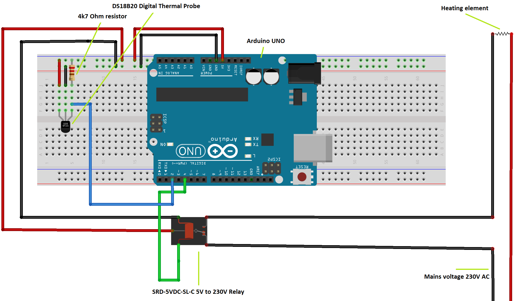

First off, I think I need to explain exactly what Sous Vide is. Sous Vide is French and means “Under Vacuum” and it is a method for cooking food with extreme precision. Let’s say you want to make the perfect steak that is medium rare all the way through. You fire up your frying pan or in max temperature and blast if for 2-3 minutes and the middle is good, however, there is about 0.5 cm on each side of well done steak, where the steak touched the pan. So, to battle this you put a larger steak in the oven, on a lower temperature for a longer time, this too will leave a crust of well done with a middle of juiciness.
That’s where Sous Vide comes in. Sous vide is all about controlled temperature slow cooking. You seal your food, for this example a steak, in a plastic bag with herbs and spices, but you make sure there are no air in the bag. You then put the steak in a water bath that is precisely 54.4ºC and you cook it for two hours. After the two hours you then take the steak out and sear it for 30s on each side, leaving you with a perfectly medium rare steak with maybe a mm of crust.
So, lately I’ve been working on making a Sous Vide machine, as I am a student and I don’t want to spend £100-200 on stuff to make food with, when I can try to make it for less than £10. So, I bought a temperature sensor, a relay, an Arduino and pulled out one of my old soldering irons, that still works but I have replaced with a new and better version. I then added all these together in the following setup:

All of the components are marked with the part names, however, make sure to read the diagrams for your individual parts as certain misconfigurations can lead to broken components and even breaking the Arduino. When you wire everything up, I would advice to handle it with care, as the heating element is running on 230V AC, and therefor can be lethal. Don’t try to tackle this as your first project, if you don’t have any prior experience with higher voltages and be careful! The code for this project is available in the code section